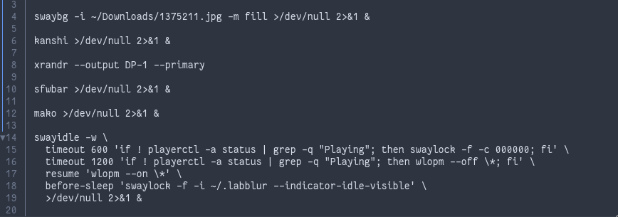

Cíl kapitoly: Představit externí nástroje a programy, které jsou nezbytné pro sestavení plnohodnotného uživatelského prostředí.
Na rozdíl od komplexních prostředí (Desktop Environments) jako GNOME nebo KDE Plasma, které obsahují vše "v jedné krabici", je Labwc pouze okenním manažerem a kompozitorem. Neobsahuje panel, nevykresluje tapetu, nezobrazuje notifikace. Pro vytvoření použitelného desktopu si uživatel musí vybrat a poskládat jednotlivé nezávislé programy z Wayland ekosystému, což poskytuje obrovskou svobodu volby.
